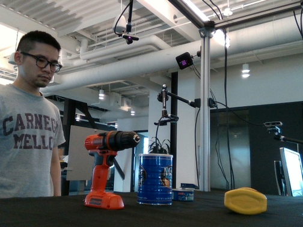
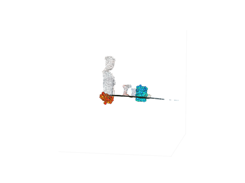

Expands the offline matplotlib renderer to a 4-video spec and adds a frame-0 "camera matches RGB input" trick for the world-space rotating view. All four videos are rendered from the same predictions (HOI3R Stage 1 R3 cached overfit, 3 k steps) and the same 4RC pristine scene .npz that v1 used — the only change is the drawing. No viser, no Playwright, no OpenGL.
r3_3k_preds.pt) was produced before the 2026-04-22
DexYCB handedness fix (see project_dexycb_handedness_latent_bug.md):
left-hand sequences trained with the wrong GPS latent. This publish is about
the rendering pipeline. Do not quote L2/chamfer numbers from this page
as model evaluation.
pred_N_track, query frame t=15) with per-track
HSV hue. Raw RGB frame underlay. No hand/obj overlay. 16 frames, 504×378, 10 fps.
The DexYCB raw RGB input was recorded by the camera whose pose, in the
4RC world frame, is extr_c2w ≈ I at frame 0 (4RC sets its
canonical-world origin at the first-frame camera center). For matplotlib's
ax.view_init(elev, azim) to place the viewer at that same
location, we need to:
R so the
DexYCB "scene up" (−Y_world) becomes matplotlib's +Z_mpl. The basis is
R = [[1,0,0],[0,0,1],[0,−1,0]] (i.e., Y ↔ −Z).scene[0..T−1]["pts"] mean on the high-confidence mask).camera_pose_to_view_init(extr_c2w, centroid_world,
world_basis=R), which takes the camera-in-world vector
C − centroid, applies R once, and reads off
elev = asin(v_z/|v|), azim = atan2(v_y, v_x).+total_rot × (t/(T−1)) across the
clip. Default total_rot = 360°.For this demo clip:
| quantity | value |
|---|---|
frame-0 elev | 8.92° |
frame-0 azim | −79.36° |
radius |C − centroid| | 0.594 m |
| scene centroid (world) | (−0.108, 0.092, 0.577) |
| scene centroid (matplotlib frame) | (−0.108, 0.577, −0.092) |
| azimuth sweep | −79.36° → +280.64° (one full revolution) |


| concern | v1 (--mode track) | v2 (--mode v2) |
|---|---|---|
| scene cloud in camera overlays | opaque (alpha 0.9) RGB-colored scatter on top of the RGB frame | semi-transparent (alpha 0.25) — RGB frame shows through cleanly |
| hand / obj color | single color (red / blue) for the whole entity | per-vertex hue from a hue family (orange / cyan) so each vertex is individually resolvable |
| scene tracks | not rendered — scene cloud is drawn as RGB points only | video 1 renders 500 FPS-subsampled scene tracks (from
pred_N_track) as their own HSV-hue sliding-window
trails — the 4RC Motion head output visualized standalone |
| world-space camera | hand-picked start azimuth −60°, sweeps 60° total; elev fixed at 18° | frame-0 view_init derived from the RGB-input extr_c2w;
azimuth sweeps a full 360° revolution across the clip |
| world axis convention | rely on matplotlib default ZXY; data plotted in world-Y-down frame (upside-down risk) | fixed basis R = [[1,0,0],[0,0,1],[0,-1,0]] applied to all
plotted points so DexYCB −Y_world = matplotlib
+Z_mpl |
| videos produced | 2 (track_camera + track_world) |
4 (scene-only, ho-only, ho+tracks, world-rotating) |
logs/exp_eval/r3_3k_preds.pt — HOI3R
Stage 1 R3 cached overfit @ 3 k steps. Same file as v1 (not re-generated).
Schema: pred_hand_per_frame (16, 128, 3),
pred_obj_per_frame (16, 256, 3) in world coordinates.logs/exp1_4rc_dexycb/20200709-subject-01_20200709_141754_836212060125.npz
— same 4RC pristine inference file used by v1. The per-pixel
pred_N_track tensors were already present (v1 never loaded
them); v2's load_scene(path, with_tracks=True) now reads
pred_N_track and pred_N_conf_track and exposes
them per frame. No fresh 4RC forward pass was needed.subject-01 / 20200709_141754, camera
836212060125, frames 0..15.ssh root@180.184.249.158 -p 20161
cd /mnt/afs/haonan/hoi3r/HOI3R/.worktrees/feat-dcf
git log -1 --format='%H %s' 8afc6fb
/mnt/afs/haonan/miniconda3/envs/human3r/bin/python scripts/hoi3r_offline_render.py \
--scene-npz logs/exp1_4rc_dexycb/20200709-subject-01_20200709_141754_836212060125.npz \
--predictions logs/exp_eval/r3_3k_preds.pt \
--output-dir logs/renderer_v2/r3_3k \
--mode v2 --v2-emit-frame0-png
None. --mode multiframe and --mode track still
produce bit-identical outputs (re-ran --mode track after the v2
edit: track_camera.mp4 = 143 KiB, track_world.mp4
= 39 KiB, matching the v1-page sizes to the kilobyte).
predictions.pt and publish a
"post-handedness-fix" tracker entry with the same 4 videos.extr_c2w. For non-canonical 4RC clips (not yet used in
HOI3R), the same camera_pose_to_view_init path applies but
the matplotlib framing will need per-clip ax.set_box_aspect
tuning.
Renderer commit 8afc6fb on feat/dcf
(feat(render): RENDERER_V2 4-video spec (--mode v2)).
Previous renderer (v1, commit 9a1eb87): 2026-04-22-renderer-4rc-track-style.html.